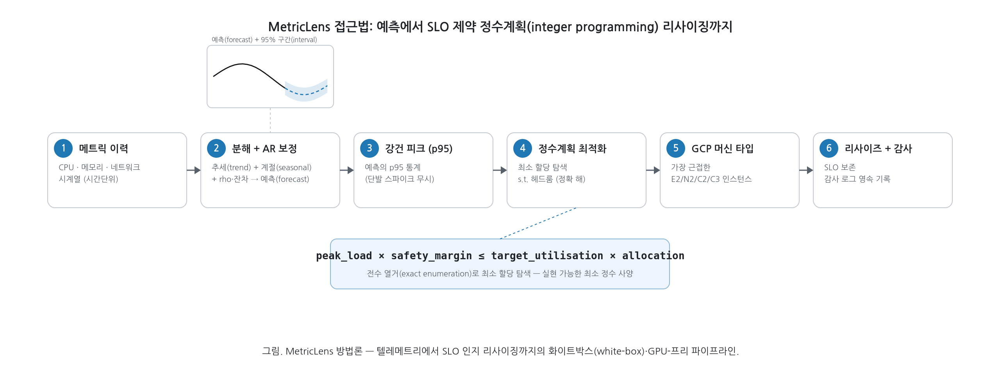

Team 구글링 · googai_congress
MetricLens AI
경량 시계열 예측 기반
서버 리소스 부하 예측 · 동적 리사이징 최적화
GPU 없이 CPU만으로 부하를 예측하고, 정수계획법으로 SLO를 보장하는 최소 자원을 산출 ·
실제 GCP 인스턴스를 모니터링/리사이즈
팀장 이용원 · 서한녕 · 송심우 | → / Space 로 이동
문제
온프레미스는 만성적 과프로비저닝
- Azure 트레이스(SOSP'17): VM의 60%가 평균 CPU 20% 미만 — 자원·전력 낭비.
- 퍼블릭 클라우드 최적화 도구(CAST AI·Compute Optimizer 등)는 망분리·규제 온프레미스에서 사용 불가.
- 온프레 모니터링 도구는 임계치 기반 "리포팅"에 그쳐 SLO 제약 최적화를 풀지 못함.
→ 외부 의존성 없이, GPU 없이, 데이터 기반으로 "얼마나 줄여도 되는지"를 정량 산출하는 도구가 필요.
접근법 (방법론)
예측 → SLO 제약 정수계획 리사이징

메트릭 이력 → 분해+AR 예측(95% 구간) → 강건 피크(p95) → 정수계획 → GCP 머신타입 → 리사이즈
시스템 아키텍처
3계층 레이어드 · GCP 네이티브

구동 방식
런타임 · CI/CD 흐름
 Cloud Build → Cloud Run(scale-to-zero) 배포 · 백엔드가 Cloud Monitoring 실측 적재 + Compute Engine 실제 리사이즈
Cloud Build → Cloud Run(scale-to-zero) 배포 · 백엔드가 Cloud Monitoring 실측 적재 + Compute Engine 실제 리사이즈
예측 엔진
경량·화이트박스 예측
- 계절-추세 분해 + AR(1) 잔차 보정으로 자기상관 활용
- 점예측 + 95% 예측구간 (표본 외 백테스트 RMSE 기반)
- 표준 라이브러리만 — 네이티브 의존성·GPU 불필요
lower/upper = ŷ ± 1.96 · RMSE
실측 커버리지(PICP) 0.93–0.98 → 잘 보정됨

리사이징 최적화
강건 피크(p95) + 정수계획 정확 해
- 강건 피크: 최댓값 대신 p95 — 단발 스파이크에 과프로비저닝되지 않음.
- 헤드룸 제약 하 최소 정수 할당을 전수 열거(정확 해)로 산출.
p95_peak × safety_margin ≤ target_utilisation × allocation
버스트 호스트는 자동 유지 · 메모리 바운드는 CPU만 축소 — 신뢰성 있는 다운사이징.
실제 GCP 연동
데모가 아니라 실제 인프라
- Cloud Monitoring으로 실제 인스턴스(ml-web/api/batch/idle)의 CPU·메모리 적재.
- Compute Engine API로 실제 머신 타입 변경(stop→change→start).
- 월 ₩300k 예산 가드 + 보호 인스턴스 denylist로 안전.
4대실제 e2-small 인스턴스
≈₩84k/월 (한도 내)
0유휴 시 Cloud Run 비용
데이터의 통계적 대표성
균일하지 않은, 근거 있는 데이터
- 공개 트레이스 근거: Azure(SOSP'17) · Alibaba 2018 · Barroso & Hölzle.
- AR(1) 자기상관 · 날짜별 변동 · 추세 · 이분산 · 이상치 가산(결정론적).
0.28–1.11변동계수 CV
0.5–0.9시차-1 자기상관
6종워크로드 아키타입
모델 평가 (논문 수준)
기준선을 능가, 잘 보정됨
| 지표 | 결과 |
|---|
| seasonal-naive 능가 (RMSE) | 6 / 6 |
| 두 기준선 모두 능가 | 5 / 6 |
| Diebold-Mariano p<0.05 | 4 / 6 |
| 예측구간 커버리지(PICP) | 0.93–0.98 |
MASE·sMAPE·DM 검정·PICP/MPIW로 평가 — 단일 MAPE보다 엄밀.

차별점
경쟁이 못 들어오는 공백
🔒 에어갭/온프레 자립형
🪶 GPU-프리 경량
🎯 SLO 제약 처방적 정수계획
🔍 화이트박스 설명가능성
🧾 감사 추적
🧩 인프라 비종속(VM/베어메탈)
SaaS 옵티마이저(텔레메트리 외부 전송)·CSP 추천기(단일 클라우드)·온프레 모니터(서술적)의 사이.
지금 체험
직접 눌러보세요
대시보드에서 예측 실행 · 리사이즈 · History 열람 · Test Scenarios(실제 GCP 동기화/리사이즈/모델 평가)까지.
MetricLens AI · Team 구글링 — 감사합니다.